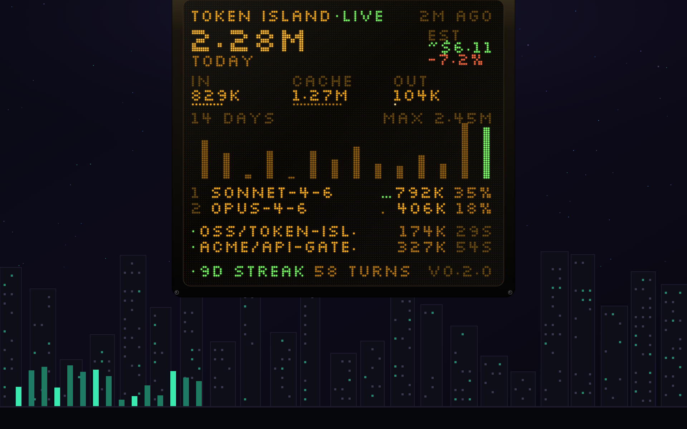

A · 琥珀 LED 点阵
未点亮圆点网格 / 磷光辉光 / 扫描线 / 金属边框。气质：机场出发牌、80s 仪表。

B · 青色 VFD 点阵
真空荧光双层 bloom / 玻璃反光 / 细亮边框 / 琥珀色成本强调。气质：90s 高端音响。

C · 物理翻牌点阵
每个圆片有高光与投影 / 暖白翻起 / 点距更粗、信息更少。气质：老式翻牌时刻表。

D · 现代平点阵
细点阵 + 单色 / 无 glow 无扫描线 / 荧光绿强调。气质：Nothing、Teenage Engineering。